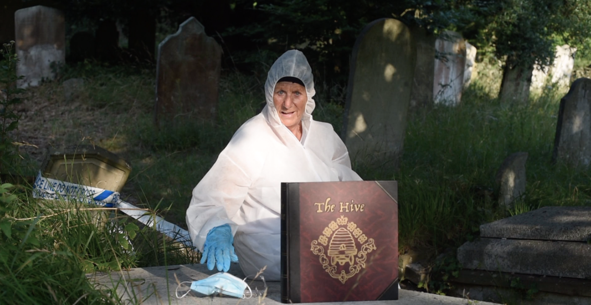
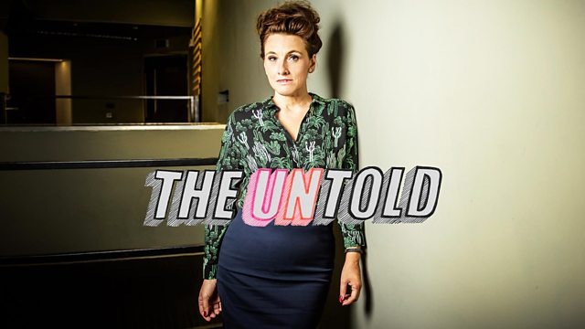

THE HIVE is an opera based in the world of forensic psychiatry.
Hiveopera in collaboration with Tête-à-Tête has produced extracts from Act 1 and Act 2 which were very well received, and we are now looking for partners to develop the project into a full production. Please see below for videos of the performances, how the project developed, a synopsis and details of the creatives and producers. If you would like to contact us please email hiveopera@gmail.com
The libretto was conceived and written by Carole Hayman, inspired by research she had done as a Fellow at Kings College London - a study of women who commit serial murder. This became a 4-screen video installation of verbatim interviews with those intimately connected to killings. Funded by The Wellcome Trust the work was shown at Fabrica Gallery during the 2008 Brighton Festival.Carole returned to the project a few years later with a workshop at Out of Joint Theatre Company. From that came The Hive libretto - the title from a forensic psychiatrist who said in an interview, 'Women kill close to the hive'.
Shortly afterwards, Carole enticed Harvey Brough, a musician and composer whose work she loved, to write the score. The Hive words and music aim to address some of human nature's darkest depths, yet move rather than horrify, while keeping us emotionally charged. Quite the challenge!
A workshop showing of part one was seen last summer at Arcola Theatre's Grimeborn Festival, funded by Tête-à-Tête and directed by Bill Bankes-Jones, where it was very well received. With financial assistance from ACE, a draft of the second act was completed and a half hour extract directed by Susannah Waters was mounted in August 2017 at the Tête-à-Tête festival at RADA.
The Hive would like to thank Bill Bankes-Jones, Anna Gregg and everyone at Tête-à-Tête for their encouragement and support, and for mounting Act 1 at the Arcola and giving us space to mount Act 2 at RADA.
The Hive – Covid Cut
Watch Now BBC Radio 4 - The Untold charts the long and often halting process of creating an Opera from scratch on the challenging subject of female serial killers.
The Hive @ Angel Fields Festival, Liverpool Hope University, February 2020
Below you will find videos of both extracts, and at the bottom of the page a video of the post-show discussion at RADA with Rosemary West's solicitor, his wife, and the production team.
Act 1
Act 1 takes place at a Forensic Psychiatry Conference on 'The Nature / Nurture of Evil'.
The timetable for the conference is:
- 20:00 The Period of Latency and Female Serial Killers
- 20:15 Case Study: The Grimms
- 20:30 Talking Circle
- 20:45 Interview: Bill B-J interviews Crystal Tipps
- 21:00 Close
- ACT 1 CREDITS:
- Music: Harvey Brough
- Words: Carole Hayman
- Director: Bill Bankes-Jones
- Design: Jamie Simmons
- Technical Stage Manager: David Salter
- Image & Video: Josh Pullman
- Producer: Anna Gregg for Tete-a-Tete
- Associate Producer: Chris Wallis
- Bill Bankes-Jones (Voice of Judge)
- Carole Hayman (Narration)
- Christopher Diffey (Tenor)
- Turiya Haudenhuyse (Soprano)
- Clara Sanabras (Recorded Voices)
- Jessica Walker (Mezzo)
- Keel Watson (Baritone)(
- ACT 2 CREDITS:
- Music: Harvey Brough
- Words: Carole Hayman
- Director: Susannah Waters
- Producer: Chris Wallis
- Associate Producer: Chris Taylor
- THE HIVE:
- Carole Hayman (CHRYSTAL)
- Soprano: Elizabeth Cragg (LITTLE RED RIDING HOOD/DR A)
- Mezzo: Marcia Bellamy (GRISELDA/GRETEL/DR C)
- Tenor: Ted Schmitz (HUNTER)
- Bass: Keel Watson (HANSEL/ DR J)
- CHORUS:
- Soprano: Susannah Hardwick
- Mezzo: Rebecca Leggett (MAID MARIAN)
- Tenor: Alexander Jasper (LONG JOHN SILVER)
- Bass: Robert Brooks (DR GEORGE)
- Piano: Harvey Brough
Act 2
Act 2 takes place in a forest - perhaps The Forest of Arden - where archetypal characters wander. Little Red Riding Hood, on her way to visit her Grannie, is abducted by Hansel, Gretel and the Big Bad Wolf, who are all partying in their Gingerbread House. The Huntsman cannot save her, though he does his best. Everyone touched pays a price - no one escapes.
Extract of post-show discussion at RADA.
Read a full synopsis of The Hive here
Read the background for The Hive here